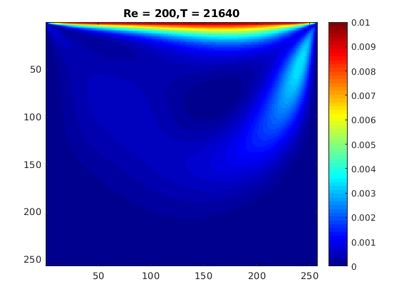
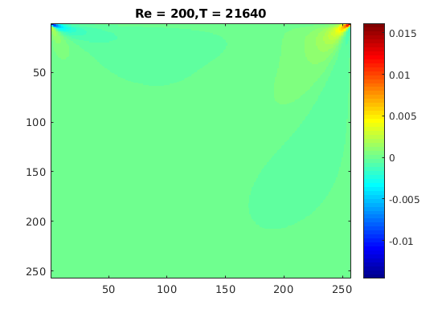
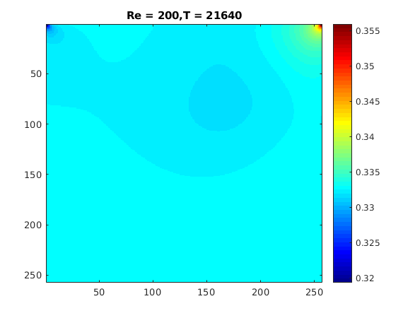
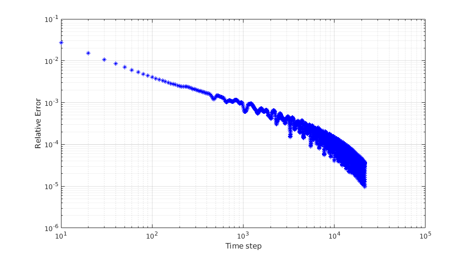

Contents
%--------------------------------------------------------------------------------------------- %%%% 2d Cavity Lid-driven Flow simulation MATLAB Code (Vectorization) %%%% Author: Yang Yang %%%% Date : Tue Apr 7 2015 %%%% %%%% Background: %%%% This code is part of Yang Yang's B.Eng. Thesis works, %%%% As a verify of Yang Yang's Algorithms and Codes' correctness. %%%% %%%% Copyright: %%%% You can copy and use this code for any purpose, but you must declare %%%% that the original version of this code was written by Yang Yang %%%% %%%% Disclaimer of Warranty: %%%% Maybe, there are many mistakes in this code, both in fundamental theory and programming, %%%% because of the limitation of my own knowledge and strength. %%%% As a result: THESE DOCUMENTS AND CODES ARE PROVIDED "AS IS" WITHOUT WARRANTY OF ANY KIND. %%%% I MAKE NO WARRANTIES, EXPRESS OR IMPLIED, THAT THEY ARE FREE OF ERROR. %----------------------------------------------------------------------------------------------
Programming Initialization
close all; clear all; clc; tic; feature accel on; % Acceleration on feature jit on; % Just in time on fprintf('Programming LidDrivedFlowMain Running ... \n');
Programming LidDrivedFlowMain Running ...
Global Varibles
global Q Lx Ly Nx Ny U ex ey omega delta_x delta_y ... delta_t rho_0 c Re mu tau_f Dimension % Model's parameters Dimension = 2; % Problem's Dimension Q = 9; % Qian 9 D2Q9 Velocity model Lx = 256; % Length in x direction Ly = 256; % Length in y direction Nx = 256; % grid numbers in x direction (must equal to that in y) Ny = 256; % grid numbers in y direction U = 0.1; % velocity of lid rho_0 = 1.; % reference density Re = 200 ; % Reynold number % Discrete velocity : ex = [0 1 0 -1 0 1 -1 -1 1]; ey = [0 0 1 0 -1 1 1 -1 -1 ]; % weight in equilibrium distribution function : omega= [4./9. 1./9. 1./9. 1./9. 1./9. ... 1./36. 1./36. 1./36. 1./36.]; % Parameters expressions delta_x = Lx/Nx ; % space step interval delta_y = delta_x ; % grid step length in each direction must equal c = 1 ; % speed of lattice sound (must equal to 1) delta_t = delta_x / c ; % time step interval mu = U * Lx / Re ; % Dynamic viscosity tau_f = 3. * mu / (c^2. * delta_t) + 1./2. ; % Relaxaition time
Local Varibles
Macroscopic
rho = zeros(Nx+1,Ny+1); % macro density ux = zeros(Nx+1,Ny+1); % macro velocity x-direction uy = ux; % macro velocity y-direction ux_temp = ux; % macro temporary velocity uy_temp = uy; % micro temporary velocity % Mesoscopic f = zeros(Nx+1,Ny+1,Q); % distribution function (t+1) f_temp = f; % temporary distribution function (t) feq = f; % equilibrium distribution function
Residual in compution (Breaking criteria) Control
CheckResidualInterval = 10; % check interval residual = 1e-5; % breaking criteria tmax = 1e7; % max time step epsilon = 0; % relative error ht = figure('name','Erro VS Time'); % relative Error time plot set(ht,'Color',[1 1 1],'menubar','none')
Outputs control
OutputsInterval = 10;
files_name = 'LidDrivedFlow';
Plot control
PlotInterval = 10; plot_name1 = 'Velocity Field'; plot_name2 = 'Vorticity Field'; plot_name3 = 'Pressure Field'; h = zeros(1,3); h(1) = figure('name',plot_name1); h(2) = figure('name',plot_name2); h(3) = figure('name',plot_name3); set(h(1),'Color',[1,1,1],'menubar','none'); set(h(2),'Color',[1,1,1],'menubar','none'); set(h(3),'Color',[1,1,1],'menubar','none');
Programming log
file_log = 'LidDrivedFlow';
Initial the flow field
[rho,ux,uy,f] = initialfield(); f_temp = f; feq = f;
main loop to update flow field
for t=1:tmax % Collsion (Whole field) % Collsion operate f_plus(t) for i = 1:Q f_temp(:,:,i) = f(:,:,i) + (feq(:,:,i)-f(:,:,i))/tau_f ; end % Stream f(t) --> f(t + delta_t) for i=1:9 f(:,:,i) = circshift(f_temp(:,:,i), [ex(i),ey(i),0]); end % Macroscopic Variables rho(t + delta_t), u(t + delta_t) ux_temp = ux; uy_temp = uy; rho = reshape(sum(f,3),Nx+1 ,Ny+1); ux = reshape ( ... ( reshape(f,(Nx+1)*(Ny+1),9) * ex' ), Nx+1,Ny+1) ./rho; uy = reshape ( ... ( reshape(f,(Nx+1)*(Ny+1),9) * ey' ), Nx+1,Ny+1) ./rho; % Compute Equilibrium distribution function f_eq(:,:t + delta_t) [feq(:,:,1),feq(:,:,2),feq(:,:,3),feq(:,:,4),... feq(:,:,5),feq(:,:,6),feq(:,:,7),feq(:,:,8),... feq(:,:,9)] = arrayfun(@f_eq,rho(:,:), ux(:,:), uy(:,:)); % BCs compute f(t+delta_t) at boundary % left rho(1,2:Ny) = rho(2,2:Ny); % Using neighbor point's density ux(1,2:Ny) = 0; uy(1,2:Ny) = 0; [feq(1,2:Ny,1),feq(1,2:Ny,2),feq(1,2:Ny,3),feq(1,2:Ny,4),... feq(1,2:Ny,5),feq(1,2:Ny,6),feq(1,2:Ny,7),feq(1,2:Ny,8),feq(1,2:Ny,9)] ... = arrayfun(@f_eq,rho(1,2:Ny), ux(1,2:Ny), uy(1,2:Ny)); % f_eq(1,2:Ny,t + delta_t) for i = 1:Q f(1,2:Ny,i) = feq(1,2:Ny,i) + (f(2,2:Ny,i) - feq(2,2:Ny,i)); end % right rho(Nx+1,2:Ny) = rho(Nx,2:Ny); % Using neighbor point's density ux(Nx+1,2:Ny) = 0; uy(Nx+1,2:Ny) = 0; [feq(Nx+1,2:Ny,1),feq(Nx+1,2:Ny,2),feq(Nx+1,2:Ny,3),feq(Nx+1,2:Ny,4),... feq(Nx+1,2:Ny,5),feq(Nx+1,2:Ny,6),feq(Nx+1,2:Ny,7),feq(Nx+1,2:Ny,8),feq(Nx+1,2:Ny,9)] ... = arrayfun(@f_eq,rho(Nx+1,2:Ny), ux(Nx+1,2:Ny), uy(Nx+1,2:Ny)); % f_eq(Nx+1,2:Ny,t + delta_t) for i = 1:Q f(Nx+1,2:Ny,i) = feq(Nx+1,2:Ny,i) + (f(Nx,2:Ny,i) - feq(Nx,2:Ny,i)); end % top rho(1:Nx+1,Ny+1) = rho(1:Nx+1,Ny); ux(1:Nx+1,Ny+1) = U; % lid velocity uy(1:Nx+1,Ny+1) = 0; [feq(1:Nx+1,Ny+1,1),feq(1:Nx+1,Ny+1,2),feq(1:Nx+1,Ny+1,3),feq(1:Nx+1,Ny+1,4),... feq(1:Nx+1,Ny+1,5),feq(1:Nx+1,Ny+1,6),feq(1:Nx+1,Ny+1,7),feq(1:Nx+1,Ny+1,8),feq(1:Nx+1,Ny+1,9)] ... = arrayfun(@f_eq,rho(1:Nx+1,Ny+1), ux(1:Nx+1,Ny+1), uy(1:Nx+1,Ny+1)); % f_eq(1:Nx+1,Ny+1,t + delta_t) for i = 1:Q f(1:Nx+1,Ny+1,i) = feq(1:Nx+1,Ny+1,i) + (f(1:Nx+1,Ny,i) - feq(1:Nx+1,Ny,i)); end % bottom rho(1:Nx+1,1) = rho(1:Nx+1,2); ux(1:Nx+1,1) = 0; % lid velocity uy(1:Nx+1,1) = 0; [feq(1:Nx+1,1,1),feq(1:Nx+1,1,2),feq(1:Nx+1,1,3),feq(1:Nx+1,1,4),... feq(1:Nx+1,1,5),feq(1:Nx+1,1,6),feq(1:Nx+1,1,7),feq(1:Nx+1,1,8),feq(1:Nx+1,1,9)] ... = arrayfun(@f_eq,rho(1:Nx+1,1), ux(1:Nx+1,1), uy(1:Nx+1,1)); % f_eq(1:Nx+1,1,t + delta_t) for i = 1:Q f(1:Nx+1,1,i) = feq(1:Nx+1,1,i) + (f(1:Nx+1,2,i) - feq(1:Nx+1,2,i)); end % erro if( mod(t,CheckResidualInterval) == 0 ) epsilon = RelativeErro(ux, uy, ux_temp, uy_temp); % call function to compute Relative error fprintf('Time Step = %d; Velocity field integral Relative Error = %.10E \n', t,epsilon); figure(ht) loglog(t,epsilon,'b*'); xlabel('Time step'); ylabel('Relative Error'); hold on; grid on; drawnow; if (epsilon < residual && t>(5000)) break; end end % plot if( mod(t,PlotInterval) ==0 ) plotfunction(h, rho, ux, uy, t); end % outputs if( mod(t,OutputsInterval) ==0 ) file_name = FieldOutputs(rho, ux, uy, t, files_name); fprintf('Time Step = %d; data saved as: %s \n', t,file_name); end end figure(ht); hold off; % hold off figure handle ht
Time Step = 10; Velocity field integral Relative Error = 2.7473902269E-02 Time Step = 10; data saved as: LidDrivedFlow_10.dat Time Step = 20; Velocity field integral Relative Error = 1.5259469308E-02 Time Step = 21630; Velocity field integral Relative Error = 1.1211625492E-05 Time Step = 21630; data saved as: LidDrivedFlow_21630.dat Time Step = 21640; Velocity field integral Relative Error = 1.0154456568E-05 Time Step = 21640; data saved as: LidDrivedFlow_21640.dat Time Step = 21650; Velocity field integral Relative Error = 9.6553294648E-06   
Outputs
file_name = FieldOutputs(rho, ux, uy, t, files_name);
fprintf('Time Step = %d; data saved as: %s \n', t,file_name);
Time Step = 21650; data saved as: LidDrivedFlow_21650.dat
Computing Report
compute running time
time_used = toc; time_hour = floor(time_used / 3600); time_minute = floor((time_used - time_hour*3600) / 60); time_second = time_used - time_hour*3600 - time_minute*60; % output log file fp = fopen([file_log,'.log'],'w'); % log of computing fprintf(fp,'Programming name: %s \n',files_name); fprintf(fp,'Time step: %d, Final relative Error: %.10f \n',t,epsilon); fprintf(fp,'Using time : %d hour, %d minute, %f second \n',time_hour,time_minute,time_second); fclose(fp); % print log fprintf('Time step: %d, Final relative Error: %.10f \n',t,epsilon); fprintf('Using time : %d hour, %d minute, %f second \n',time_hour,time_minute,time_second); fprintf('Programming LidDrivedFlowMain paused! Press Any key to exit ... \n'); pause;
Time step: 21650, Final relative Error: 0.0000096553 Using time : 8 hour, 39 minute, 6.296735 second Programming LidDrivedFlowMain paused! Press Any key to exit ...